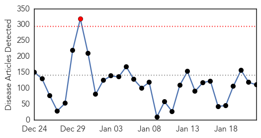
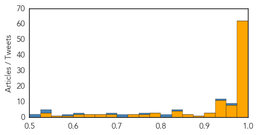
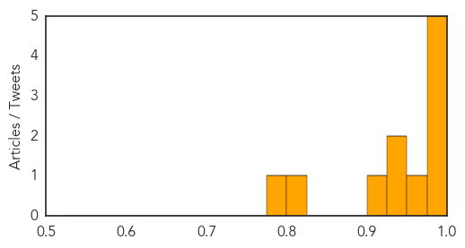

Ebola
30-Day Web Trend
1 alerts, 0 warnings

30-Day Twitter Trend
0 alerts, 0 warnings
Article Locations
Article Confidences
Top Articles:
- 1.000
- Health officials: Ebola risk remains low in RI, proper precautions in place
- 1.000
- West African Ebola vaccine trials to start soon
- 1.000
- Ebola ebbing in West Africa but vigilance needed -WHO
- 1.000
- Ebola in Liberia: Liberia cremates 2,800 Ebola bodies
- 1.000
- Middlesex Hospital prepared to take Ebola patients
- 1.000
- ‘Ebola ebbing in West Africa’ - Africa
- 1.000
- As Ebola Outbreak Recedes, Global Health Care Leaders Focus On Prevention, Coordinated Action
- 1.000
- Ebola ebbing in West Africa but vigilance needed -WHO
- 1.000
- Ebola outbreak nations report steady trickle of cases
- 1.000
- Ebola virus death toll reaches 8,641: WHO
- 0.999
- Cuban Doctor, Recovered From Ebola, Resumes Work
- 0.999
- Ebola ebbing in West Africa but vigilance needed: WHO
- 0.999
- Glimpse of an end to the Ebola epidemic on the front line
- 0.999
- ‘Ebola ebbing in West Africa’
- 0.999
- Q&A: How does MSF care for patients suffering from Ebola?
- 0.999
- UN reports significant drop in Ebola cases
- 0.999
- Schools to reopen in Sierra Leone as Ebola abates
- 0.999
- Ebola: from devastation to survival and solidarity
- 0.999
- 'No room for complacency' UN officials say, urging vigilance in Ebola fight as West Africa marks progress
- 0.999
- Ebola has now killed a third of the world's gorilla and chimpanzee populations
- 0.999
- Ebola Outbreak Latest News 2015: Mali Declared Ebola-Free But Not 'Devoid Of Risk'
- 0.999
- Great news: Big drop in West Africa Ebola cases, and economic damage smaller too
- 0.999
- Has there been an official Ebola "turning point"?
- 0.998
- Ebola epidemics result in mounting deaths of African apes (VIDEO)
- 0.998
- Jodhpur man did not die of Ebola in Delhi
- 0.998
- Jodhpur Man with Ebola-like Symptoms Dies of Internal Bleeding
- 0.998
- Liberia cremates 2,800 Ebola bodies - Ciatta Bishop
- 0.998
- UN reports significant drop in West African Ebola cases
- 0.998
- Ebola cases down in major step to end epidemic
- 0.998
- Health worker exposed to Ebola released from Omaha hospital
- 0.998
- Sierra Leone emergency anti-malaria drive reaches 2.5 million people - TRFN
- 0.997
- Northern Voices Online Falling Ebola cases
- 0.997
- Nebraska hospital releases patient found not to have Ebola
- 0.997
- Sierra Leone to reopen schools in March as Ebola retreats
- 0.996
- Sierra Leone lifts Ebola quarantine measures amid progress
- 0.996
- 'Serry-Kamal Was a Legend'
- 0.996
- Sierra Leone to reopen schools in March as Ebola infections slow
- 0.995
- Patient Monitored For Ebola Discharged From Hospital
- 0.995
- Oklahoma infectious disease unit ready to respond
- 0.994
- Sierra Leone to reopen schools in March as Ebola infections slow
- 0.992
- Sierra Leone lifts Ebola quarantine measures amid progress
- 0.992
- Great apes 'need a vaccine too' as virus has wiped out a third of their numbers in past outbreaks
- 0.991
- Ebola effort needs another $1bn despite decline in cases in west Africa, says UN
- 0.991
- Falling Ebola cases show 'turning point' - WHO
- 0.989
- Hope to save Ebola patients with county twist
- 0.989
- The politics of public health in Africa: A (very) brief history
- 0.988
- Third aid worker from Sweden in Ebola scare
- 0.988
- Ebola Epidemic Takes a Toll on Sierra Leone’s Surgeons
- 0.988
- Ebola Vaccine Trials To Begin In West Africa
- 0.987
- Reforms Proposed for Ebola-Stricken Health Care Systems
Showing top 50 articles...
Top Tweets:
- 0.960
- Ebola Update: 21,689 confirmed, probable & suspected cases reported in 3 most affected countries, with 8,626 deaths. EbolaResponse
- 0.960
- Ebola Update: 21,689 confirmed, probable & suspected cases reported in 3 most affected countries, with 8,626 deaths. EbolaResponse
- 0.944
- RT: Ebola Update: 21,689 confirmed, probable & suspected cases reported in 3 most affected countries, with 8,626 deaths. EbolaResp…
- 0.858
- RT: Ebola Epidemic Takes a Toll on Sierra Leone’s Surgeons http://t.co/rVEoQGXPgY science
- 0.846
- Les minières de l'Ébola ebola http://t.co/vmO6s3xUTx
- 0.810
- RT: Ebola epidemic ebbing in West Africa, but vigilance needed, says WHO http://t.co/ImaDj72zQa via
- 0.795
- Kenya sent 170 health workers,Nigeria 250 & Ethiopia 200 to Ebola affected countries Support a health worker today Africaagainstebola
- 0.764
- Ebola: Fauci says Sierra Leone may be added to the large randomized vaccine trial NIAID is planning for Liberia. Countries suggested this.
- 0.711
- RT: Read stories from CDC’s global technical experts who have been called on to help w/the Ebola effort around the world. http:/…
- 0.700
- MT: "One Ebola case anywhere is too many...the world didn't wake up until Ebola got to the US" @KofiAnnan Davos
- 0.688
- RT: SierraLeone president removes quarantine on districts and eases trade restriction imposed to control the Ebola... http:/…
- 0.671
- Sierra Leone to reopen schools in March as Ebola infections slow http://t.co/VigeY3DqYn
- 0.632
- RT: Fall in cases of Ebola in the 3 affected countries show "turning point" in crisis, @WHO officials say http://t.co/B6F7F6a…
- 0.618
- CDC working w Ebola affected countries, @USAID, @WHO, @gavi, others to implement vaccination campaigns. http://t.co/a6MQxbgeKa
- 0.614
- Global Health Security ebola wef15 http://t.co/H7U96wXt5D
- 0.581
- RT: To reduce malaria transmission & related deaths, WHO recommended administering anti-malarial medicines to people in Ebola hotspo…
- 0.576
- .@WHO reports on why & how Ebola devestated West Africa via http://t.co/MnVTqSIOdF
- 0.568
- . Statement on the 4th meeting of the IHR Emergency Committee regarding the 2014 Ebola outbreak in West Africa http://t.co/MXK5xtiYLl
- 0.517
- AFD Blog `@WHO Ebola Situation Report – January 21st ' http://t.co/qs2Teqk8Nq
- 0.517
- .@UNMEER Congratulates Mali for Stemming Ebola Epidemic, Urges Vigilance http://t.co/auYRmz3MAC EbolaResponse
Chikungunya
30-Day Web Trend
3 alerts, 0 warnings

30-Day Twitter Trend
1 alerts, 0 warnings

Article Locations

Article Confidences
Top Articles:
- 0.998
- Lindsay Lohan Has The Disease, But What Is It?
- 0.997
- Chikungunya infections in Vermont
- 0.997
- Chikungunya updates from Honduras and Costa Rica
- 0.996
- What You Should Know About the Chikungunya Virus
- 0.981
- Pique Newsmagazine
- 0.961
- Lindsay Lohan Released from Hospital after Being Admitted with Chikungunya
- 0.947
- Mosquitos carrying Chikungunya hitchhiking to the U.S.
- 0.942
- Lindsay Lohan hospitalized for rare mosquito-borne virus
- 0.923
- State warning travelers of ailment
- 0.812
- Lindsay Lohan released from hospital
- 0.782
- Dina Lohan Worried, Begs Lindsay To Move Back To Long Island
Top Tweets:
-
No tweets found for Jan 22, 2015